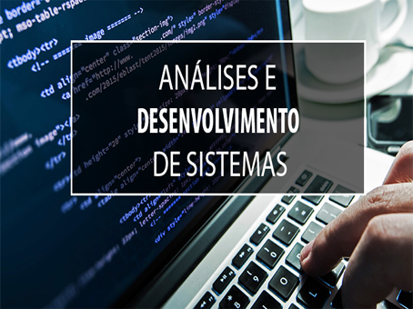

GRADUAÇÃO DE ANÁLISES E DESEMVOLVIMENTO DE SISTEMAS
SOBRE O CURSO

O curso forma profissionais conhecidos como Analista de Sistemas ou Desenvolvedor de Sistemas. São esses profissionais que criam os sistemas com os quais você já teve contato: sistemas de comércio eletrônico, sistemas de redes sociais, web sites, apenas para citar alguns.
Que tal fazer parte desse grupo seleto de profissionais? O melhor caminho para isso é aprender de forma gradativa, resolvendo problemas do simples ao complexo, participando ativamente de projetos reais com clientes reais, além de ter como professores os melhores profissionais de mercado.
Você também aprenderá a trabalhar em equipe, analisando e desenvolvendo sistemas para internet, tablets, celulares e Internet das Coisas (IoT), utilizando ambientes DevOps, linguagens e tecnologias de alta-produtividade e de melhor custo-benefício.
Período
Horário
Matutino / Noturno
4 Semestres
VOCÊ PRONTO PARA
Com a graduação em Análise e Desenvolvimento de Sistemas você estará preparado para um mercado abrangente, podendo atuar em cargos de Programação, ou como Analista de Sistemas, Gerente de Projetos e Gerente de TI.